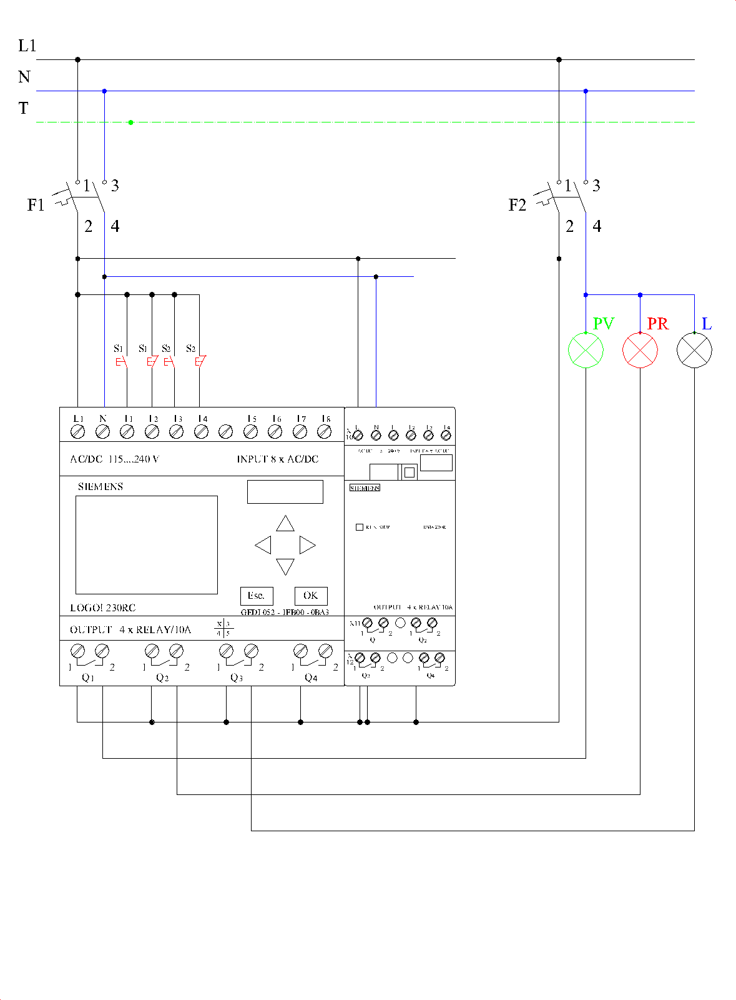

2.- Punto de luz controlado mediante PLC / LOGO! controlada mediante relé programable (LOGO)
1. Asignación de señales en el relé programable.
- I1: Pulsador marcha (S1) — contacto NO.
- I2: Pulsador paro (S1) — contacto NC.
- I3: Pulsador marcha (S2) — contacto NO.
- I4: Pulsador paro (S2) — contacto NC.
- Q1: Piloto verde (PV).
- Q2: Piloto rojo (PR).
- Q3: Bombilla (L).
Entradas digitales
Salidas digitales
2. Programa básico en FUP (LOGO!Soft Comfort)
| Bloque / Segmento | Lógica | Función |
|---|---|---|
| B001 RS | S = I1 | R = NOT I2 | Circuito activado → Q1 |
| B002 NOT | Entrada = B001 | Piloto rojo → Q2 |
| B003 AND | I3 AND B001 | Marcha de la bombilla solo con el circuito activado |
| B004 RS | S = B003 | R = NOT I4 OR NOT B001 | Bombilla → Q3 |
2.1. Mejora: programación con relé de impulsos
| Bloque / Segmento | Lógica | Función |
|---|---|---|
| B001 / B002 | Igual que en el programa básico | Pilotos verde y rojo |
| B003 AND | I3 AND B001 | Pulsación válida solo con el circuito activado |
| B004 Relé de impulsos | Trg = B003 | R = NOT B001 | Cada pulsación de S2 enciende/apaga la bombilla → Q3 |
3. Esquema
Esquema multifilar de la práctica 2.

×